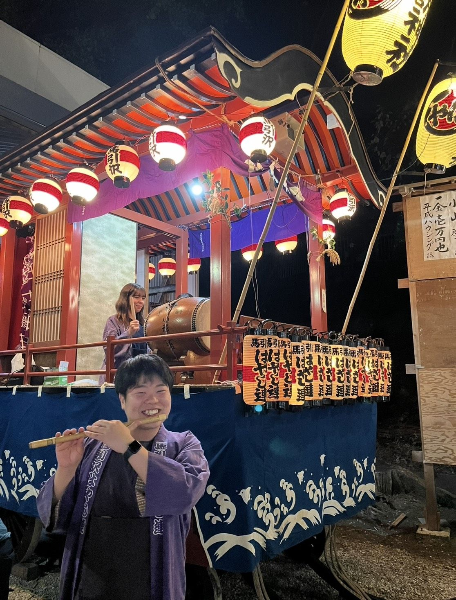

先週、諏訪神社の例大祭が無事に終わりました！⛩️北諏訪小学校1年生の頃から参加しているお祭りですが、今回は準備＆片付け＆直会(なおらい)まで全て参加しました。改めて、運営に尽力してくださった神社関係者や消防団の皆様に御礼を申し上げます。ありがとうございました！✨
馬引沢はやし連としては、大きなトラブルも無く、しっかりと演奏ができたと思います。新メンバーの小学生たちは今年がデビュー戦でした！楽しかったと感じてもらえたら嬉しいです☺️
個人的には、篠笛を吹ける人がもっと増えてほしいです…！ベテランの相澤さんは今回踊りが多かったので、6〜7割くらい私が演奏していました。フルートよりも音域が高いので、ずっと吹いていると疲労感が…💦(笑)
しかし、今回ウルッとした場面がありました。お神輿のお宮入りのシーンです。50周年の記念すべきお宮入り、全体のテンションは最高潮で、はやし連も一番難易度の高い曲で囃し立てるのが恒例になっていました。お神輿を担いでいる人たちの真剣な表情を見ていたら、自然と涙が込み上げてきました。この神社で24年ほどお囃子を続けてこられて良かった、と心の底から感じました😌

そして、現在ジェンダー平等世界1位のアイスランドに関するチラシを配っている者として、お祭りでの男女平等とは何なのか、考えさせられる部分もありました。
「お勝手」と呼ばれる、キッチン周りの任務を全て担当してくれているチームは全員女性で、お宮入りの後の宴会では、お料理やお酒を運んで回り、夜遅くまでずっと働いていました。
お神輿を担ぐ女性はいても、お勝手に入って料理を手伝う男性はいないんだなぁ、と。。
もちろん、性別で役割を分けるというのは、ある意味分かりやすく便利ですが、伝統だからと言って、「女性たちがお世話をしている」という構図になっていたのが少し腑に落ちませんでした。
日野のとある神社では、「男の炊き出し」として、男性が料理を担当しているそうです。いつか見に行ってみたいものです！✨
例大祭への寄付も昔と比較すると大幅に減り、ボランティア的に動ける人がいないと成り立たない側面もあります。
この規模のお祭りを長く続けていくことは本当に大変です。運営陣も確実に高齢化が進んでいます😥
この先も何十年と、諏訪神社で賑わいのあるお祭りができるように、私にできることを探していきたいと思います。